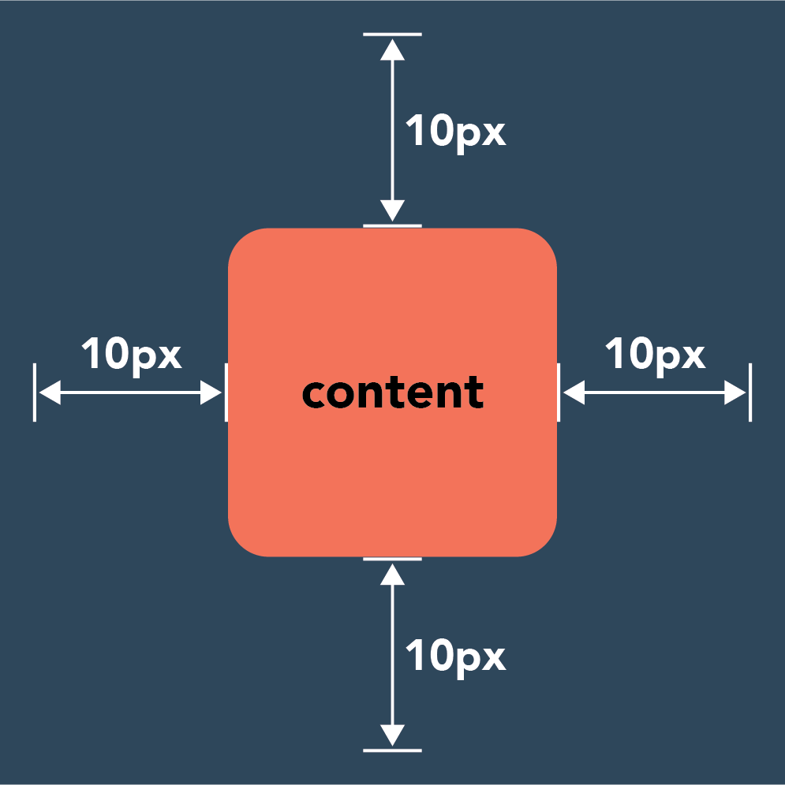
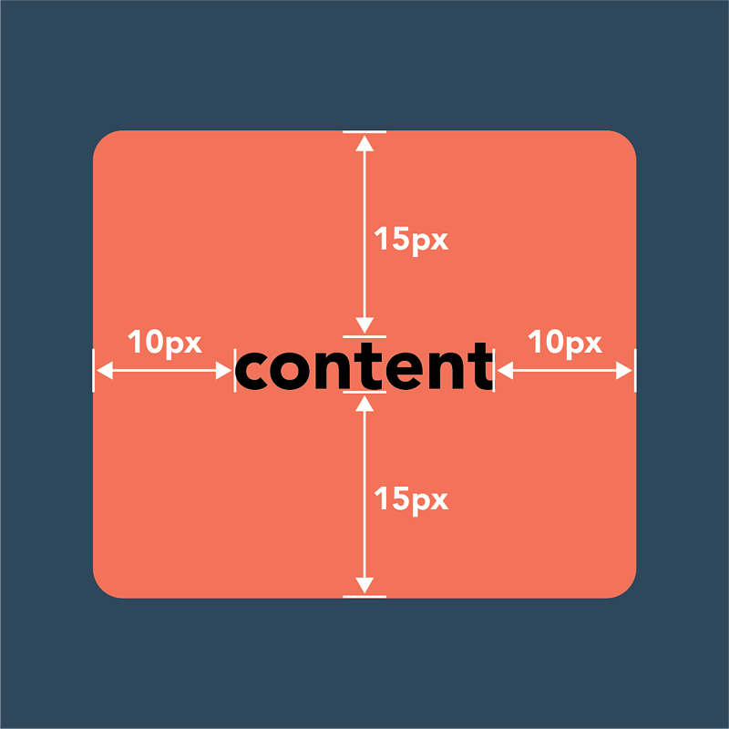
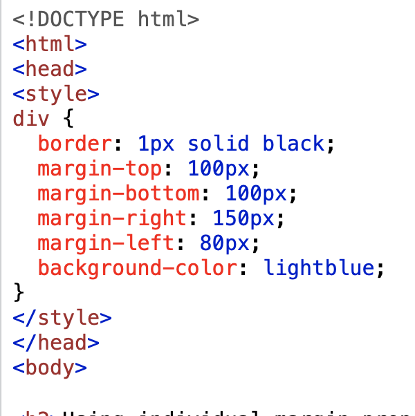
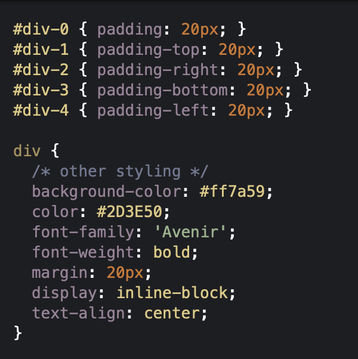

| Margin = space around an element’s border

| Padding = space between an element’s border and the element’s content

| Border = layer of the CSS box model that sits between margin and padding

How to Add Margins in CSS:
You can add them individually:
Margin-top
Margin-right
Margin-bottom
Margin-left
Or, Clockwise:
Margin-top > Margin-right > Margin-bottom > Margin-left
margin: 30px 75px 45px 100px;
}

Similarly, for padding:
